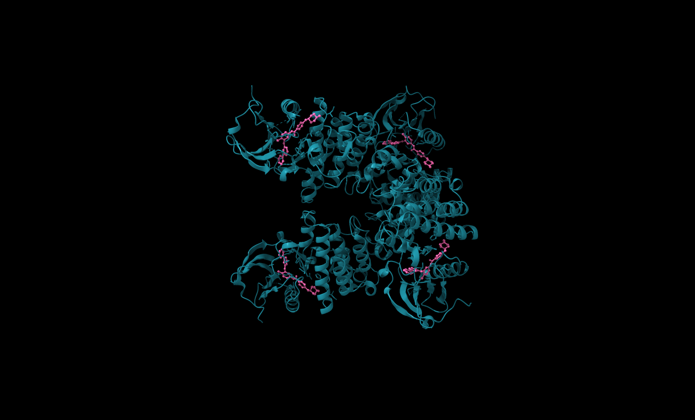
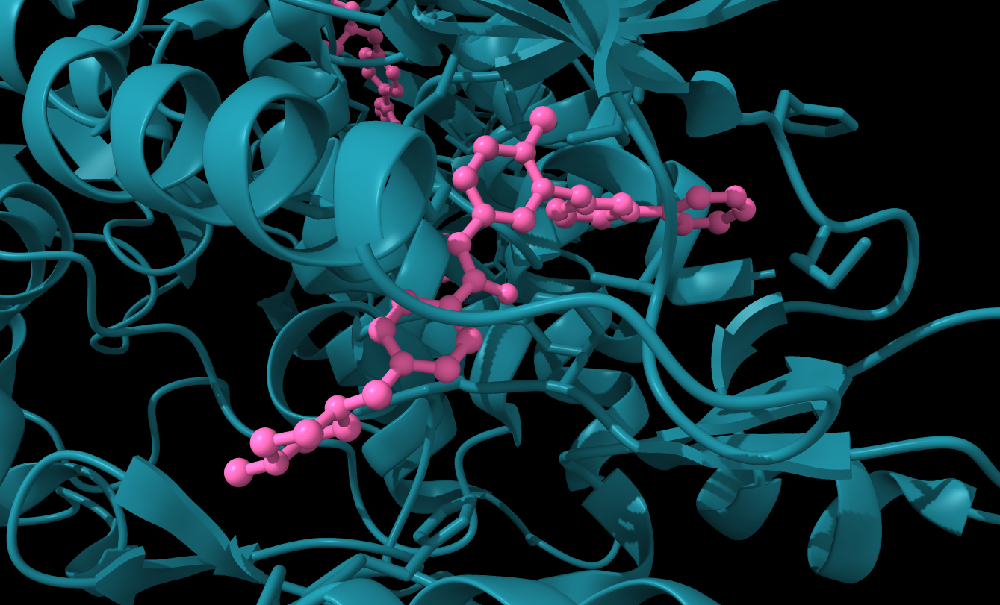
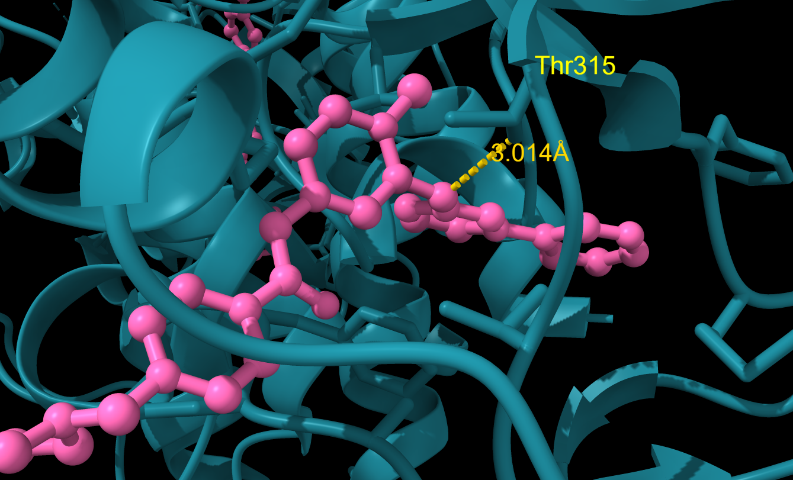

To explore the intersection of structural biology and advanced 3D production, I exported the atomic coordinates of iron-saturated human lactoferrin (PDB: 1LFG) from UCSF ChimeraX into Blender. Utilizing the Cycles path-tracing engine and the ACES color space for enhanced dynamic range, I applied a photorealistic glass material shader to the protein's secondary structure to simulate physical light refraction and transmission. The scene is illuminated by a calibrated 2-point studio lighting setup to accentuate the complex alpha-helices and beta-sheets, captured via a smooth camera fly-through and an ultra-high-resolution macro zoom shot.
Key Technical Note: Transitioning structural coordinates from ChimeraX to a dedicated ray-tracing engine allows for advanced material physics (dielectric glass refraction) and precise studio lighting, bridging the gap between molecular accuracy and cinematic visual communication.
Structural Analysis of Imatinib Binding to ABL1 Kinase
Using UCSF ChimeraX, I performed a structural analysis of the ABL1 kinase domain in complex with imatinib (Gleevec), the first FDA-approved targeted cancer therapy, sourced from X-ray crystallographic data (PDB: 2HYY). Through molecular visualization and atomic distance measurements, I confirmed a critical hydrogen bond of 3.014Å between the gatekeeper residue Thr315 and the secondary amine of imatinib — the precise interaction abolished by the clinically notorious T315I resistance mutation in chronic myeloid leukemia patients.



Key Finding: Structural measurement confirmed a hydrogen bond of 3.014Å between Thr315 OG1 and imatinib N13 — consistent with published values and confirming the critical interaction lost upon T315I gatekeeper mutation.
AlphaFold Confidence Analysis of Human Hemoglobin Subunit Beta
Using UCSF ChimeraX, I performed a pLDDT confidence analysis of human hemoglobin subunit beta (UniProt: P68871) sourced from the AlphaFold Protein Structure Database. Coloring the structure by pLDDT score revealed very high confidence (>90) across the conserved eight-helix globin bundle, with a localized low-confidence region at the N-terminal tail spanning residues Met1–Thr5 (pLDDT <70). This reduced confidence reflects the intrinsic flexibility of the unstructured terminus and its dependence on oligomeric context unavailable to a monomer-based prediction model.
Key Finding: pLDDT scores exceeded 90 across the globin bundle confirming high structural confidence, while residues Met1–Thr5 fell below 70 — correctly identifying a disordered terminus whose conformation depends on tetramer assembly context absent from the monomer prediction.